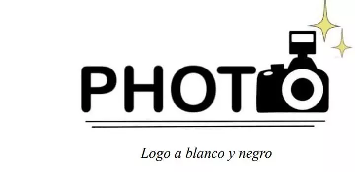

Decripcion del Proyecto

Nuestro proyecto tiene como fin brindar un lugar de memoria y recuerdo mediante la toma de fotografias dejando impresa una marca tanto en los recuerdos como en la felicidad y satisfaccion de cada persona al usar e interacctuar con nuestra fotocabina.
MISION:
Somos unas jovenes queriendo inovar en un nuevo proyecto para las ceremonias de graduacion,que se realizan cada año en los colegios, para esto estamos poponiendo nuevos espacios y recuerdos con una experiencia diferente y nueva para los estudiantes y sus familias,esto para culminar una etapa bonita de la vida.
VISION:
Ser un elemento de divesion y acompañamiento para generar momentos felices. El cual esta pensado a corto plazo (menos de un año)